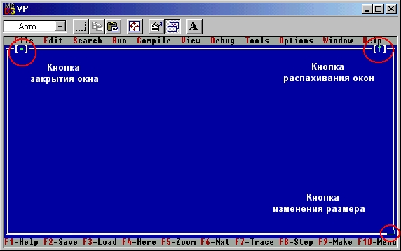
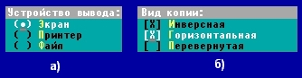
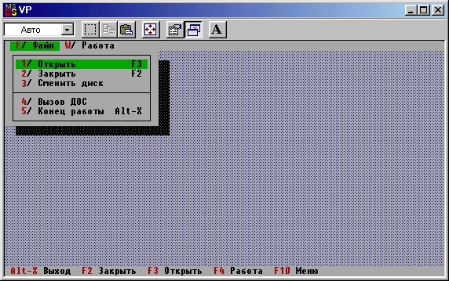
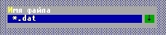

|
|
|
|
Терминальные видимые объекты
Рамки
Для создания рамки окна и кнопок изменения размера окна и его закрытия предназначен объект TFrame (рис. 16.5).
Этот объект никогда не используется самостоятельно, но только в группе, связанной с объектом TWindow. Последний имеет поле Frame с указателем на ассоциированный объект TFrame.

Рис. 16.5. Рамка окна (объект TFrame)
Кнопки
Объект TButton - это прямоугольник с надписью, имитирующий кнопку панели управления. Обычно TButton является элементом группы TDialog и «нажатие» на кнопку инициирует событие, связанное с какой-либо стандартной командой или командой пользователя.
Кластеры
Кластеры представляют собой прямоугольные видимые элементы, имитирующие несколько зависимых или независимых кнопок (см. рис. 16.6).

Рис. 16.6. Примеры кластеров: а) с зависимыми кнопками; б) с независимыми кнопками
Для создания и использования кластера предусмотрен абстрактный объект TCluster и его потомки TRadioButtons, TCheckBoxes и TMultiCheckBoxes. Объект TCluster имеет 16-разрядное поле Value, каждый разряд которого связан со своей кнопкой в кластере. Его потомки отличаются способом изменения состояния этих разрядов: TRadioButtons устанавливает содержимое разряда выбранной кнопки в 1, предварительно очистив поле Value, a TCheckBoxes переключает его содержимое, сохраняя остальные разряды неизменными. Многопозиционная кнопка TMultiCheckBoxes может иметь от одного до 8 связанных с ней разрядов в поле Value. Количество разрядов зависит от количества возможных состояний кнопки, которых может быть до 256.
Таким образом, кластер может содержать до 16 кнопок и выбирать один из возможных вариантов (объект TRadioButtons) или несколько вариантов (TCheckBoxes и TMultiCheckBoxes). Для переключения кнопок используется мышь или клавиатура. В последнем случае клавишей Tab выбирается нужный кластер, а клавишами смещения курсора - нужная кнопка; состояние выбранной кнопки меняется нажатием на клавишу Пробел.
Меню
Для выбора одного из нескольких возможных продолжений в диалоговых программах широко используются меню. Объект TMenuView и его потомки ТМепиВаr и ТМепиВох существенно упрощают создание и использование меню в среде Turbo Vision (рис. 16.7).
Любая программа в Turbo Vision всегда владеет строкой меню. Перекрывая TApplication.InitMenuBar, Вы можете использовать методы NewSubMenu, NewItem и NewLine, чтобы создать и использовать свою систему вложенных меню.

Рис. 16.7. Пример меню
Строки ввода
Для ввода различных текстовых строк с клавиатуры ПК в Turbo Vision используется тип TInputLine (рис. 16.8). Использование этого объекта дает в распоряжение пользователя мощные возможности встроенного редактора, обрабатывающего алфавитно-цифровые клавиши, клавиши перемещения курсора влево/вправо, а также клавиши Backspace, Del, Insert, Home, End.

Рис. 16.8. Пример строки ввода
Протокол ввода
Абстрактный объект THistory реализует механизм выбора строки ввода из списка ранее введенных строк (из протокола ввода). Объект THistory обычно ассоциируется с объектом TInputLine и становится доступным с помощью клавиши смещения курсора вниз (см. рис. 16.8). Протоколы ввода запоминаются в динамической памяти в виде связанных списков и имеют идентификатор (поле HistoryID), позволяющий использовать один и тот же протокол в нескольких объектах TInputLine.
Скользящие окна (скроллеры)
С помощью объекта TScroller реализуется так называемое скользящее окно, т.е. окно с текстом, положение которого (текста) относительно границ окна может меняться. Условимся для краткости такие объекты в дальнейшем называть скроллерами, а процесс смещения текста в окне - скроллингом. В общем случае размеры окна скрол-лера могут быть значительно меньше полных размеров просматриваемого текста: средства скроллера дают возможность вывести на экран любой фрагмент текста. Обычно скроллеры объединяются в одну группу с объектами TScrollBar, представляющими собой горизонтальную или вертикальную полосу. Эти полосы (полосы скроллинга) указывают положение окна относительно полных границ текста и используются для реализации скроллинга с помощью мыши. Скроллинг текста осуществляется также в ответ на нажатие клавиш смещения курсора и клавиш PgUp, PgDn, Home, End, Ctrl-PgUp, Ctrl-PgDn.
Потомки TScroller - объекты TTextDevice и TTerminal облегчают реализацию скользящих окон специального вида: объекты содержат методы, обеспечивающие запись текстовых строк в скроллер и чтение этих строк из него. Объект TTerminal отличается от своего родителя наличием внутреннего кольцевого буфера, предназначенного для запоминания текстовых строк, и соответствующих методов доступа к буферу. Размер буфера не может быть больше 64 Кбайт. Типичное применение этих объектов - реализация так называемых драйверов текстовых устройств. Например, можно связать существующий текстовый файл с объектом TTerminal и обеспечить непосредственное считывание строк файла в окно скроллера.
Просмотр списков
Абстрактный объект TListViewer предоставляет в Ваше распоряжение средства просмотра списка строк и выбора из этого списка нужной строки. Списки строк выводятся в окне, управляемом полосами скроллинга. Типичное применение объектов TListViewer - просмотр списка файлов. Обычно для этих целей используется потомок TListViewer - объект TListBox, с помощью которого списки файлов выводятся в одну или несколько колонок.
Статический текст
Объекты TStaticText - это терминальные видимые объекты, используемые для вывода текстовых сообщений. В отличие от строк, созданных непосредственным обращением к процедуре WriteLn, текстовая строка объекта TStaticText может входить в группу видимых элементов (например, окно) и управляться этой группой. Статический текст игнорирует любые события, посланные к нему. Типичное применение TStaticText - создание различного рода информационных окон или поясняющего текста в диалоговых окнах.
Строки статуса
Самая нижняя строка экрана в Turbo Vision представляет собой строку статуса. Эта строка создается с помощью объекта TStatusLine. Строка статуса обычно содержит список наиболее важных командных клавиш. Элементы строки можно также выбирать мышью. Содержание строки статуса может изменяться в зависимости от контекста программы. Для этих целей в объекте предусмотрено поле Defs, содержащее указатель на связанный список типа TStatusDef. В каждом элементе этого списка есть два поля Min и Мах, задающие диапазон контекста для данного варианта строки. Контекст программы определяется полем TView.HelpCtx.
|
|
|
|